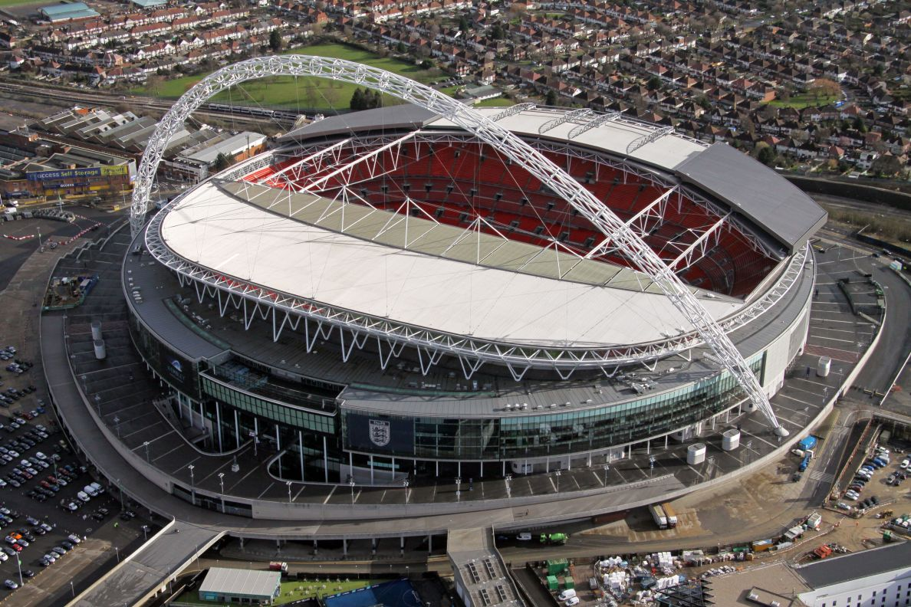
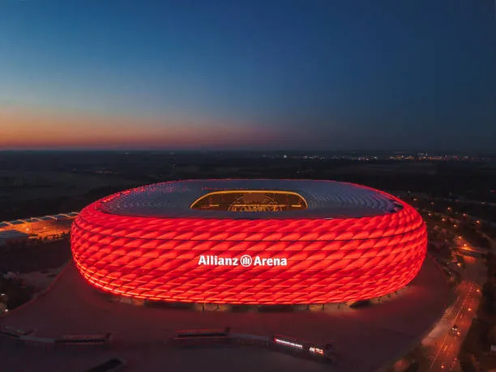

Iconic Football Stadiums

Santiago Bernabeu
The Santiago Bernabéu Stadium is a famous football (soccer) stadium located in Madrid, Spain.
It is the home stadium of one of the most successful and well-known football clubs in the world, Real Madrid Club de Fútbol.

Camp Nou
The Camp Nou is another iconic football (soccer) stadium, located in Barcelona, Spain.
It is the home stadium of FC Barcelona, one of the most successful and popular football clubs in the world.

Wembley
Wembley Stadium is a renowned sports and entertainment venue in London, UK, with a seating capacity of around 90,000.
It is famous for hosting historic football matches, including the 1966 FIFA World Cup Final.
The stadium's iconic arch is a prominent landmark in the city. Besides football, Wembley hosts concerts, rugby matches, and other major events.

Allianz Arena
The Allianz Arena, located in Munich, Germany, is a world-renowned football stadium.
Home to FC Bayern Munich and TSV 1860 Munich, its distinctive illuminated façade changes colors to match the home team's kit.
With a seating capacity of over 75,000, it's one of Europe's most iconic football venues.